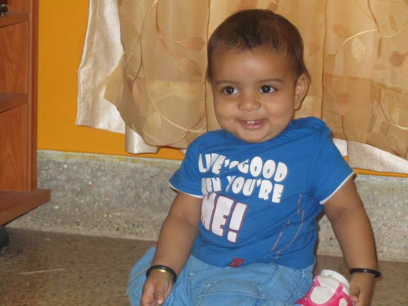
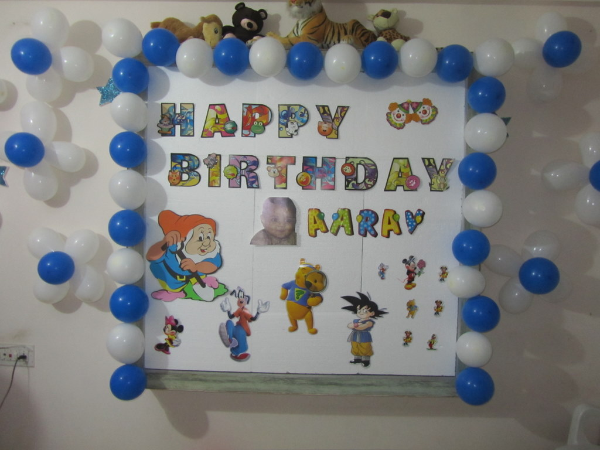
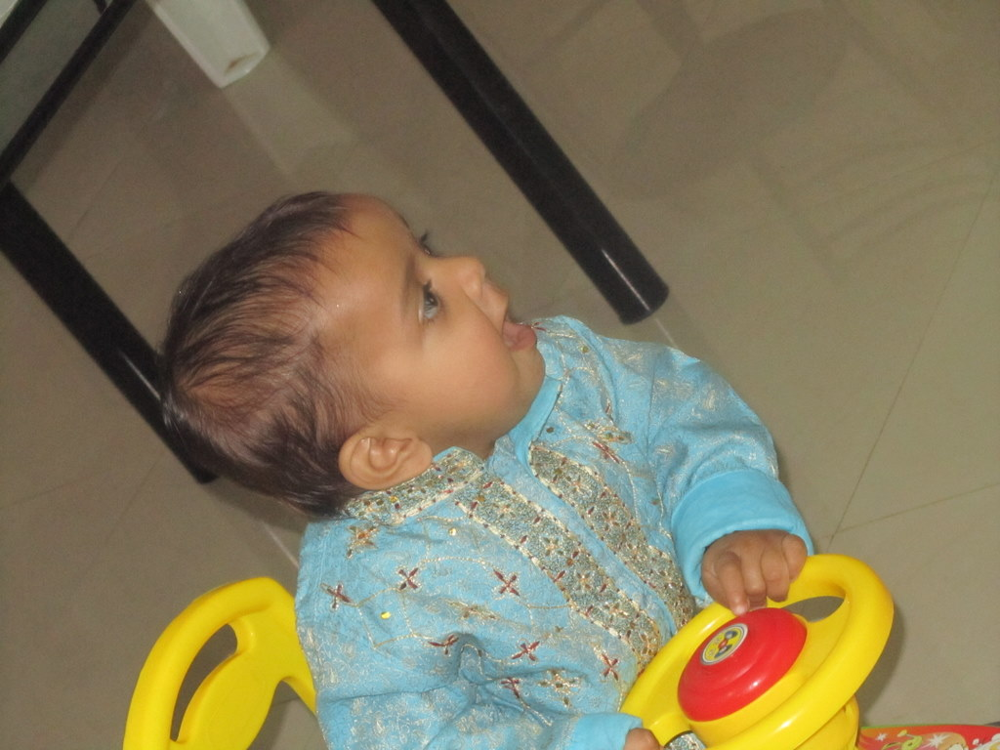
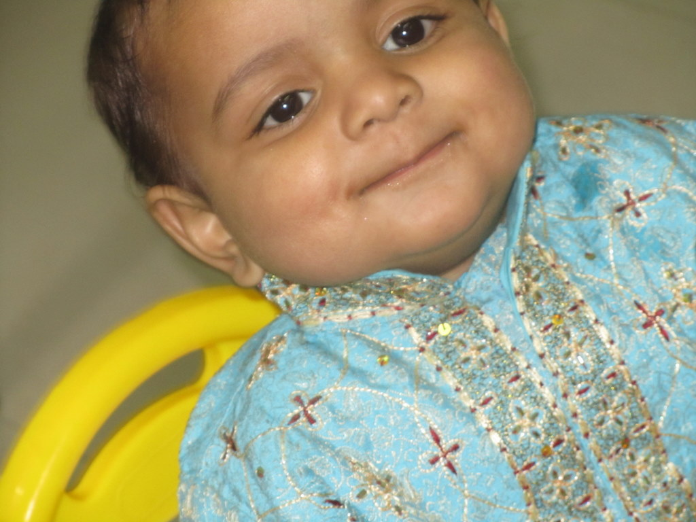
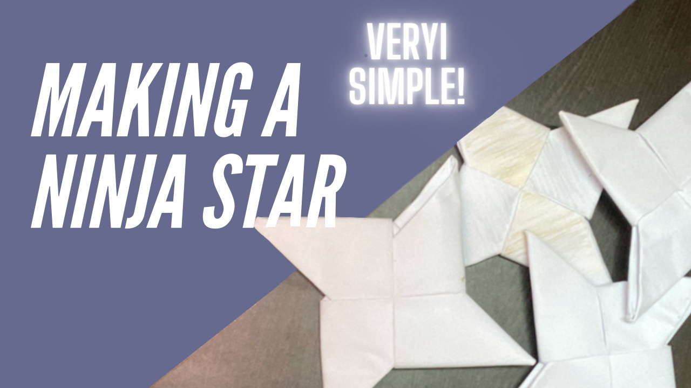

Embedded systems work that combines ESP32, Arduino-class hardware, robotics, and efficient power and software integration. This page highlights the strongest electronics projects, development workflows, and future directions.
Embedded Systems
Overview
Projects that explore power integration, sensor systems, and reliable hardware design. The focus is on clear build layouts and systems that work consistently in real environments.
Notable examples
- Custom RC car with motor control and lighting.
- Encoder-based control system for motion input.
- Modular sensor assemblies for rapid testing.
Materials





ESP32 RC Systems
Project
ESP32-based RC vehicle control with drive motor, steering servo, LED systems, and a compact power design that evaluates battery options for safe operation.
Focus areas
Embedded coordination of multiple outputs, clean control mapping, current-aware power architecture, and firmware stability.
Core skills
PlatformIO & Encoders
Workflow
PlatformIO setup on Linux to manage Arduino and ESP builds, with structured source folders, debugging flags, and USB serial configuration.
Encoder system
Encoder-based input and control sensing used to add motion feedback and more precise physical control to embedded projects.